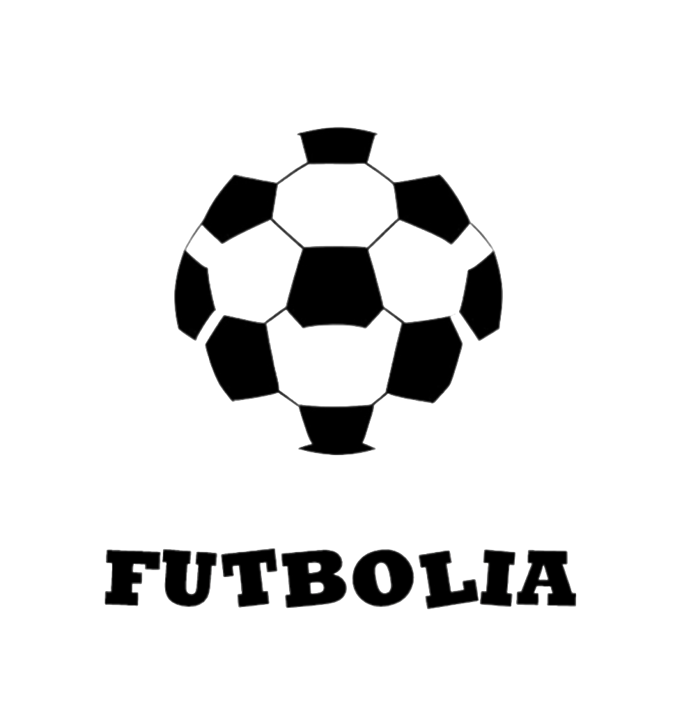
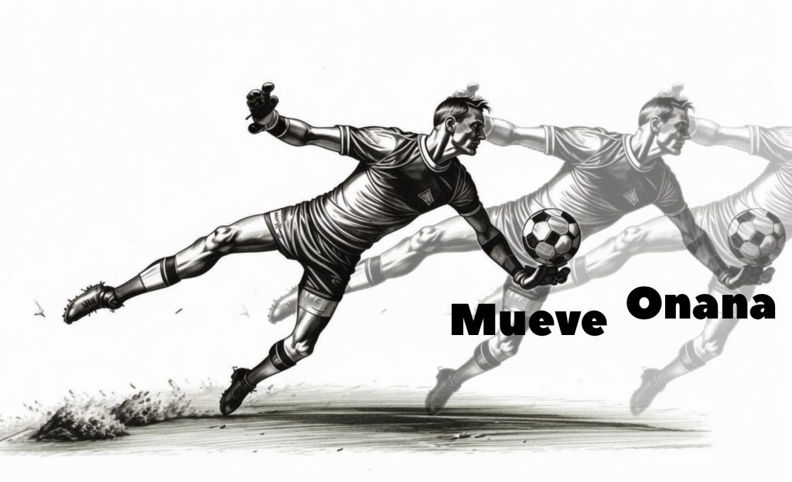
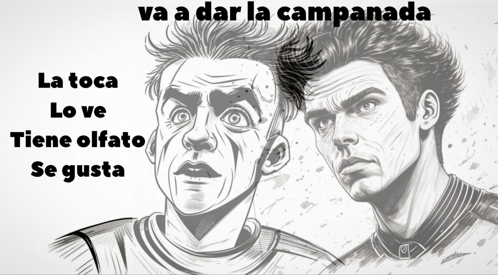
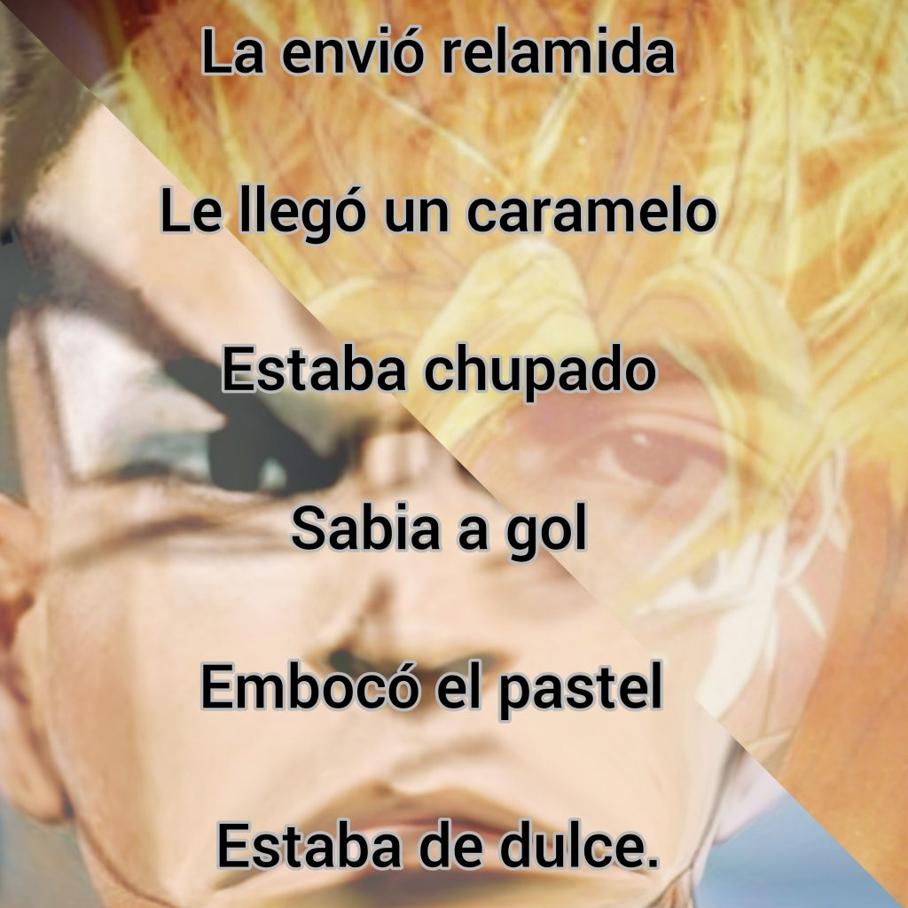
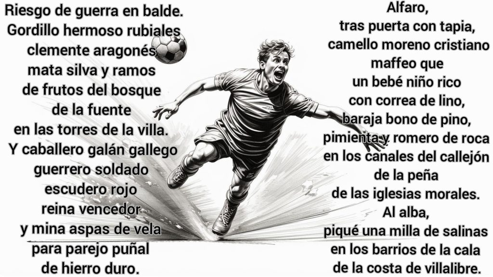
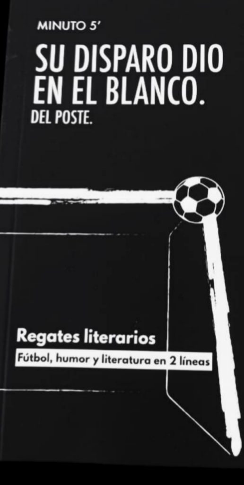
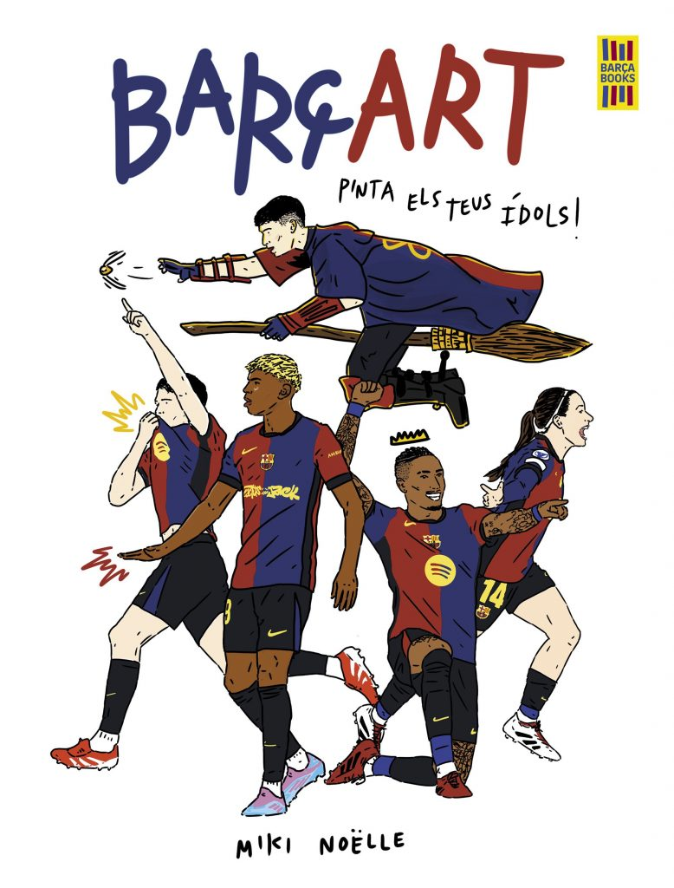

Entra un revulsivo…





Entradas salvajes
Cercanos al área
Mas Poesía

Mas Visual








Clon estático de futbolia.org · recuperado y reconstruido en flove/projects · ver la versión mejorada